Lagos State University
Faculty of Computing
A report on the PRACTICAL APPLICATION OF SOFTWARE DEVELOPMENT IN INDUSTRIES
Undertaken at
Golden Edge Softech
C01 Tomsuite Plaza, 155 Igando Road
Bakare B/Stop, Ikotun, Lagos
By
Aje Damilola
230591336
Department of Computer Science
Faculty of Computing
Lagos State University
CSC 392: Practical Applications Of Software Development
March to September 2026
Declaration
I, Aje Damilola, with matriculation number 230591336, declare that this report on my Students' Industrial Work Experience Scheme at Golden Edge Softech was prepared by me. It describes my industrial experience and DAMS Micro, a software project I developed after being inspired by the financial and accouting concepts I encountered during my placement period.
I confirm that the work reported here is my own, except where the contributions of others are acknowledged or where source code and documentation are cited.
Abstract
This report describes the industrial experience I gained at Golden Edge Softech between March and September 2026. During the placement, I worked on the backend of an accounting software project for an investment house. My work covered the general ledger, fixed assets, customer management and accounts, investments, treasury and loan modules. The project used PHP, Laravel and PostgreSQL, and the core financial calculations were handled by a senior developer while I contributed to the surrounding backend workflows, data handling, module logic and exposing the relevant APIs to the frontend
The placement introduced me to the accounting equation, account types and normal balances, chart-of-accounts hierarchy, financial reporting, prepayments and accruals. I applied these ideas to DAMS Micro, a separate microfinance accounting and lending prototype inspired by the project. The report examines its general ledger, balanced journal workflow, loan lifecycle, loan-to-ledger posting, financial reports and business-date control, with selected source code and diagrams. It concludes with the skills gained, the challenges encountered and recommendations for further work.
List of figures and listings
| Number | Title |
|---|---|
| Figure 3.1 | DAMS Micro system architecture |
| Figure 3.2 | General ledger overview |
| Figure 3.3 | Chart of accounts |
| Figure 3.4 | Journal transaction lifecycle |
| Figure 3.5 | Journal transaction detail |
| Figure 3.6 | Account statement |
| Figure 3.7 | Loan disbursement flow |
| Figure 3.8 | Loan detail and repayment schedule |
| Figure 3.9 | Trial balance report |
| Figure 3.10 | Balance sheet report |
| Figure 3.11 | Advance business date confirmation |
| Listing 3.1 | Balance validation before submission |
| Listing 3.2 | Fee validation and net proceeds calculation |
| Listing 3.3 | Journal entries created for loan disbursement |
Chapter One Introduction
1.1 Background
The Students' Industrial Work Experience Scheme (SIWES) is the part of the university programme that places students in industry so that they can apply academic knowledge to real work. It also exposes them to the tools, standards and working habits of professional practice. My placement at Golden Edge Softech, a software development agency in Lagos, gave me that exposure in a financial software environment and more technical experience.
During the placement, the company was developing accounting software for an investment house and an Asset management company(I am not able to disclose this company's name due to an NDA i signed). I worked on the backend of that project and came into contact with accounting rules that I had not studied in depth before: how accounts are classified, why debits must equal credits, how a chart of accounts is organised and how financial statements are produced from recorded transactions. That experience led me to build DAMS Micro, a separate microfinance accounting and lending prototype, as a way of applying what I had learned.
1.2 Objectives of the training
The training was intended to achieve the following objectives:
- Apply software development concepts to a professional project.
- Strengthen practical backend, database and collaborative skills.
- Understand how financial rules and controls are represented in software.
- Learn how client requirements become application behaviour.
- Develop the discipline of testing, reviewing and documenting software.
1.3 Scope and structure of the report
The report covers the organisation, my work and the prototype that grew out of it. Chapter Two introduces Golden Edge Softech and the financial concepts I encountered. Chapter Three examines DAMS Micro's architecture, general ledger, journal validation, loan posting, reports and business-date control, with selected code and diagrams. Chapter Four summarises the skills gained, challenges and recommendations. The report concentrates on the general ledger and loan modules; deposits, transfers and external settlement are outside its scope.
Chapter Two Company Profile
2.1 About Golden Edge Softech
Golden Edge Softech is a software development agency based in Lagos, Nigeria. Its office is at C01 Tomsuite Plaza, 155 Igando Road, Bakare B/Stop, Ikotun, Lagos. The company works with clients to design and build software systems, and its development team handles both the user-facing parts of an application and the backend services that support them.
At the time of my placement, the company had a project with an investment house to develop accounting software for its operations. The system was intended to support the firm's financial records and reporting. I was assigned to the backend team, where I contributed to several modules of that system. The client's identity and internal financial data are not reproduced in this report(Again due to my NDA).
2.2 My role and responsibilities
I worked as a backend developer. My responsibilities covered the general ledger, fixed assets, customer management and accounts, and the asset management area that handled investments and treasury. This gave me a broad view of how a financial system is divided into modules and how those modules share common records such as accounts, customers and transactions.
The core financial calculations in the employer's project were handled by my senior developer. My contribution was in the surrounding backend work: implementing module logic, handling data and validation, connecting workflows to the database, and supporting the behaviour that the user interface depended on. Working next to the calculation layer was useful because it showed me how much care financial software requires. A small rounding error or an unposted entry can change a reported balance, so the rules must be explicit and testable.
The project used PHP, Laravel and PostgreSQL. Laravel provided the application structure, routing, validation and database access, while PostgreSQL stored the records. Seeing these tools used in a production-oriented project helped me understand the difference between writing code that works on a small exercise and writing code that other developers must maintain.
2.3 Financial concepts learned
The placement introduced several accounting ideas that later shaped DAMS Micro. They are summarised below in the terms I came to understand them.
| Concept | What it means in practice |
|---|---|
| Accounting equation | Assets equal liabilities plus equity. Every recorded transaction must keep this relationship true. |
| Account types and normal balances | Assets and expenses normally carry debit balances; liabilities, equity and income normally carry credit balances. The type of an account determines how it increases or decreases. |
| Chart of accounts and hierarchy | Accounts are arranged under codes and parent headings so that detailed accounts roll up into summary lines. Only leaf accounts should receive postings. |
| Control accounts and subledgers | A control account shows a summary total, while a subledger holds the individual customer or item detail that makes up that total. |
| Prepayments | A payment made before the expense is consumed is initially an asset and is released to expense over the relevant period. |
| Accruals | An expense or income is recognised in the period it relates to, even if cash has not yet moved. |
| Financial reporting | The trial balance checks that debit and credit totals agree, while the balance sheet presents assets, liabilities and equity at a point in time. |
These ideas are simple to state but easy to contradict in code. A system can store numbers correctly and still present a misleading report if postings are allowed to the wrong level of the chart, if unbalanced journals are accepted, or if the date used for reporting is not controlled. That realisation became the starting point for the prototype described in Chapter Three.
Chapter Three Industrial Experience and Project
3.1 From the workplace to a prototype
My work at Golden Edge Softech gave me a view of accounting software as a set of connected rules rather than a collection of screens. The investment house's project dealt with ledgers, fixed assets, customer accounts, investments and treasury operations. Although I did not own the main calculations, I saw how those calculations depended on clean data, controlled workflows and a reliable database.
I developed DAMS Micro as an independent prototype inspired by that experience. It is not the investment house's application and does not contain the client's code or data. Its purpose is to demonstrate, on a smaller scale, how a general ledger and a loan portfolio can share one accounting foundation. The remainder of this chapter describes the prototype and the technical decisions behind it.
3.2 Project overview and scope
DAMS Micro is a microfinance accounting and lending system. It combines a general ledger, where financial transactions are recorded as balanced double-entry journals, with a loan portfolio, where borrowers are registered, loan products are configured and loans move through booking, approval, disbursement and repayment.
The objectives of the prototype are to:
- record financial transactions in a way that preserves the double-entry rule;
- organise accounts in a hierarchy that supports summary reporting and detailed customer records;
- connect loan events to the ledger so that lending activity is reflected in the books;
- produce a trial balance and balance sheet from posted records; and
- control the financial date used by the application.
The implemented scope covers the chart of accounts, journal transactions, customer records and KYC status, loan products and lifecycle, financial reports and business-date control. Deposits, transfers and external settlement are not part of the prototype. This boundary keeps the project focused on the accounting core that the placement exposed me to.
3.3 Architecture and technology
The application follows a server-centred architecture. The user interface is built with React and TypeScript, and Inertia connects it to Laravel routes without requiring a separate API layer. The backend is written in PHP with Laravel, and PostgreSQL is the database used in the project environment.
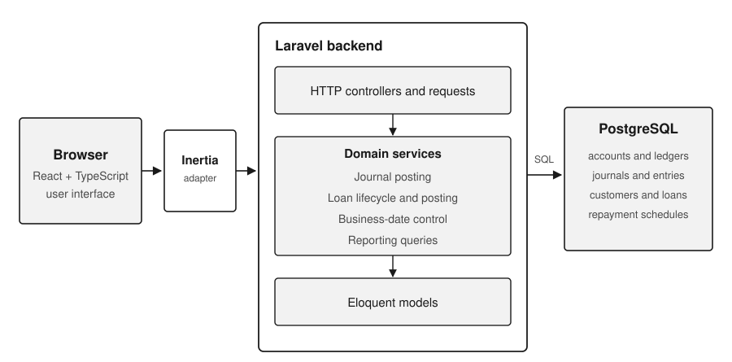
A request therefore moves from the browser, through an Inertia visit, to a Laravel controller. The controller validates the request and delegates the work to application services or models. Those services apply the accounting rules, write to PostgreSQL inside a transaction where necessary, and return the result to the interface. The important consequence is that the interface does not decide whether a journal balances or whether a loan may be disbursed. Those decisions are enforced on the server, where every client request passes through the same rules.
The backend is organised around the two domains. General ledger code handles accounts, journal transactions, entries and reports. Loan code handles customers, products, schedules, repayments and the posting service that turns loan events into journals. The two domains meet at the journal: a loan disbursement or repayment produces entries that the general ledger treats like any other posting.
3.4 General ledger and chart of accounts
The general ledger is the official record of the prototype's finances. Its chart of accounts gives each account a code, a name, a ledger, a balance type and a category. Accounts may have a parent, which produces a hierarchy. A parent account summarises the accounts beneath it, while a leaf account, one with no children, is the level that accepts postings. This prevents detail from being posted to a heading that is meant only for reporting.
Customer accounts illustrate why the hierarchy matters. Each customer can have an account in a customer subledger, while a control account summarises the customer balances for the main chart. The ledger can therefore answer two different questions: what the organisation owes or is owed in total, and what a particular customer owes. Keeping both views consistent is one of the recurring problems in accounting software.
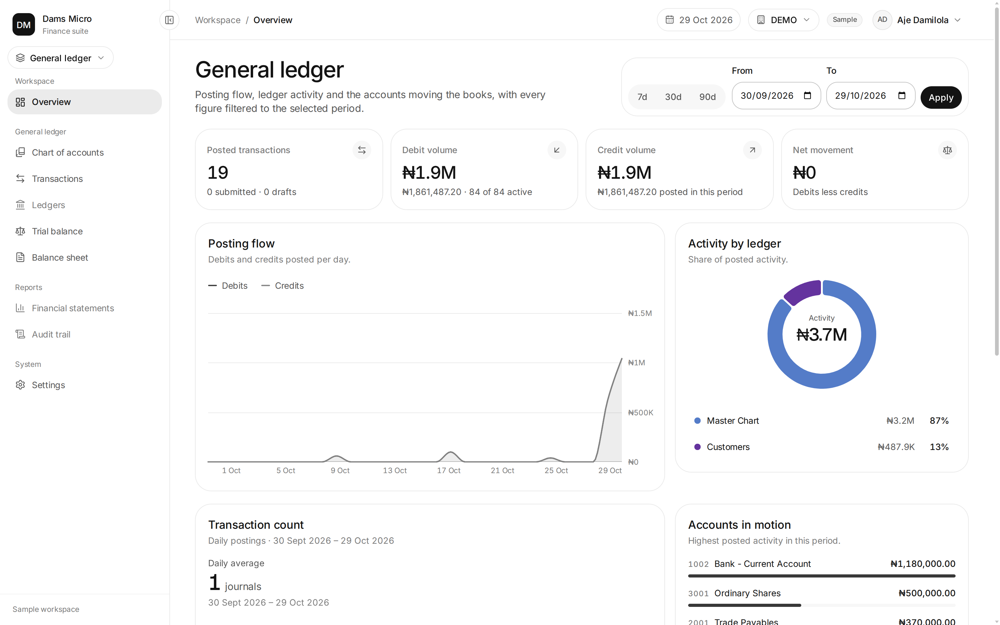
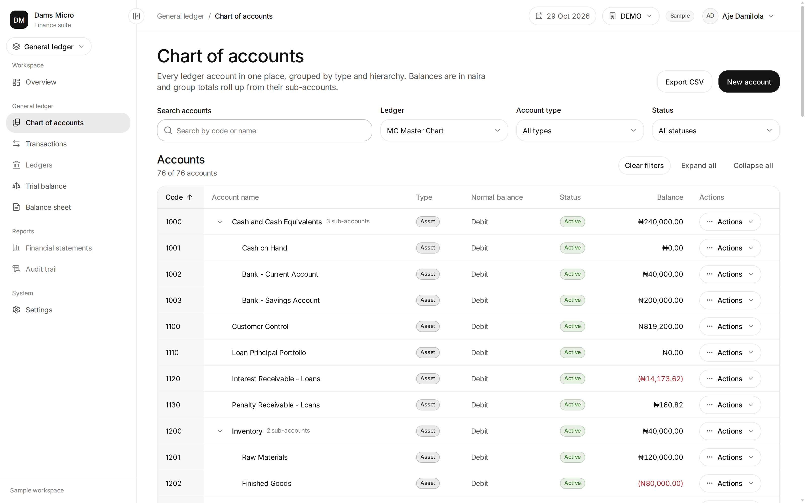
3.5 Journal transactions and double-entry accounting
A journal transaction groups the entries that describe one financial event. Each entry names an account, a side (debit or credit) and an amount. Under double-entry accounting, the total debits must equal the total credits. A transaction also has an effective date and a status. In DAMS Micro the normal path is Draft, then Submitted, then Posted, with cancellation or deletion available before posting. A posted transaction is not edited in place; a correction is recorded as a linked reversal.
The submission check is a good example of a financial rule expressed in code. The controller refuses to move a transaction to Submitted unless it has at least two entries, a positive debit total and equal debit and credit totals. The comparison uses bcmath at four decimal places rather than floating-point arithmetic, because binary floating point can produce small differences that should not exist in a ledger.
/** A transaction cannot be submitted unless it balances. */
private static function assertSubmittable(JournalTransaction $transaction): void
{
$totals = self::totals($transaction->entries);
if ($transaction->entries->count() < 2) {
throw ValidationException::withMessages([
'status' => 'Add at least one debit and one credit before submitting.',
]);
}
if (bccomp($totals['debits'], '0', 4) <= 0
|| bccomp($totals['debits'], $totals['credits'], 4) !== 0) {
throw ValidationException::withMessages([
'status' => 'Debits must equal credits before submitting.',
]);
}
}app/Http/Controllers/GeneralLedger/TransactionController.php,
lines 210 to 226. Long lines reformatted for page width.The listing is deliberately small, but it shows the shape of the rule: entry count first, then a positive debit total, then equality of totals. The error messages are written for the person using the system, not only for the developer. That matters in an accounting application, because a rejected posting must tell the user what to correct.
Money is not handled as a floating-point number. PHP's bcmath extension provides
arbitrary-precision decimal arithmetic, and the application uses bcadd to add amounts and
bcsub to subtract them. A balance update can therefore be written as
bcadd($balance, $amount, 2), and the net proceeds of a loan as
bcsub($principal, $fee, 2). The final argument fixes the number of decimal places, so values such
as 0.10 and 0.20 do not acquire the small binary rounding errors that appear when they are added as
floating-point numbers. The trade-off is performance: bcmath works on strings and performs the operation in
software, so it is slower than native arithmetic. For ledger values, correctness is worth that cost, and the
slower path is limited to the places where money is actually calculated. The account statement service uses the
same pair to carry a running balance from one entry to the next, and repayment allocation uses them to split a
payment across penalty, fee, interest and principal without losing precision.
The check belongs to the manual submission path. Journals created by the loan posting service are generated on the server and posted immediately, so they do not pass through this controller. Their balance is instead guaranteed by the arithmetic used to construct them, as Section 3.6 explains. Recognising where a rule applies, and where it does not, is part of understanding the system rather than assuming that one check covers every path.
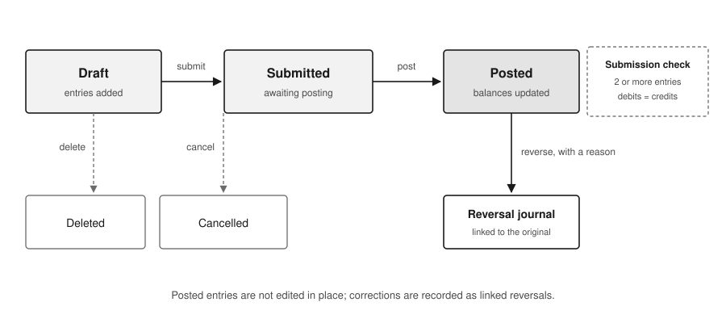
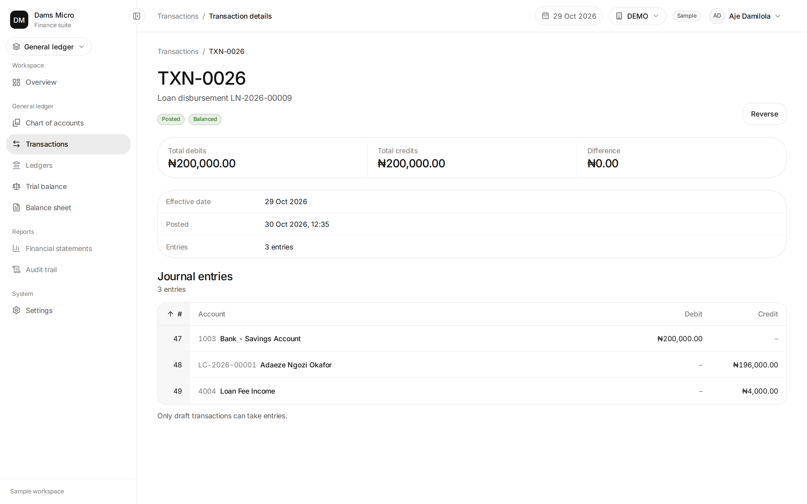
Once a transaction is posted, its entries affect account balances. An account statement lists those movements with a running balance, which allows a user to trace how a balance was reached instead of seeing only a final figure. This is the same idea as a bank statement: the closing balance is useful, but the sequence of movements is what makes it verifiable.
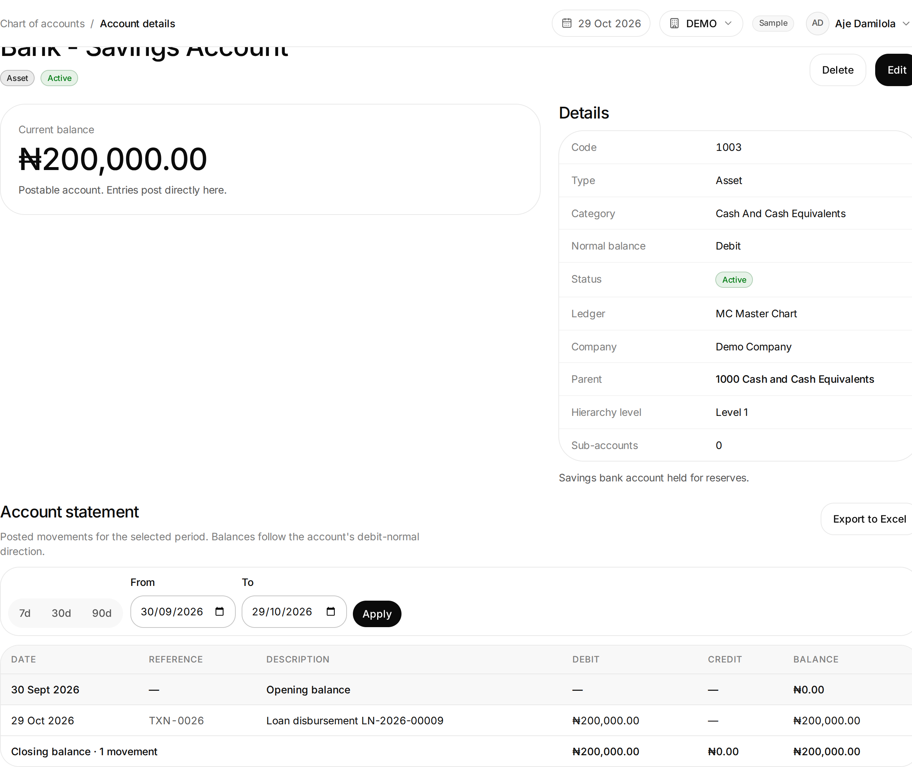
3.6 Loan management and ledger integration
The loan module registers customers, records their KYC status and links each customer to a ledger account. A loan product defines the lending terms: the interest method, annual rate, repayment frequency, principal and tenor limits, processing fee, penalty rate and grace period. It also maps the product to the accounts used for interest, fees and penalties. A loan cannot be booked for a customer whose KYC is not verified, and a product cannot be used until its required mappings are complete.
The loan lifecycle moves from booking to approval or rejection, then to disbursement and repayment. Each stage has a status check. For example, only an approved loan may be disbursed, and the operation runs inside a database transaction so that the journal, the loan status and the link between them are saved together. This prevents a loan from being marked active without its accounting entry, or the reverse.
Disbursement is the clearest point where lending meets accounting. The posting service debits the settlement bank account with the gross principal, credits the customer account with the principal less the processing fee, and credits fee income with the fee. Because the net proceeds plus the fee equal the principal, the journal balances by construction. The service validates that the fee is less than the principal before it creates any entries.
$principal = (string) $loan->principal;
$fee = (string) $loan->processing_fee;
if (bccomp($fee, $principal, 2) >= 0) {
throw ValidationException::withMessages([
'processing_fee' => 'The processing fee must be less than the principal.',
]);
}
$netProceeds = bcsub($principal, $fee, 2);app/Services/Loan/LoanPosting.php, lines 41 to 50.The amounts are cast to strings and processed with bccomp and bcsub. This is a
practical defence against the rounding problems that can appear when money is stored or calculated as a binary
floating-point number. The validation also protects the journal from a nonsensical case: a fee equal to or
greater than the principal would leave no proceeds for the customer and would break the intended meaning of the
transaction.
$txn->entries()->create([
'account_id' => $bankAccount->id,
'type' => 'debit',
'value' => $principal,
'balance_after' => 0,
]);
if (bccomp($netProceeds, '0', 2) > 0) {
$txn->entries()->create([
'account_id' => $customerAccount->id,
'type' => 'credit',
'value' => $netProceeds,
'balance_after' => 0,
]);
}
if (bccomp($fee, '0', 2) > 0) {
abort_unless($feeIncomeAccount !== null, 422,
'Fee income account is not mapped for this product.');
$txn->entries()->create([
'account_id' => $feeIncomeAccount->id,
'type' => 'credit',
'value' => $fee,
'balance_after' => 0,
]);
}app/Services/Loan/LoanPosting.php, lines 60 to 82. Long lines
reformatted for page width.The three entries can be read as a small accounting story. The bank account carries the gross principal, the customer account carries the net proceeds, and fee income carries the processing fee. If the fee is zero, the third entry is skipped; if the fee income account has not been mapped, the operation stops rather than posting an incomplete journal. The direction of each entry follows the prototype's current posting convention; before the system is used with real funds, that convention should be checked against the organisation's chart of accounts and accounting policy, particularly the treatment of the customer and settlement accounts.
Repayment follows a similar pattern. A repayment is allocated to the oldest instalment first, and within each instalment the order is penalty, fee, interest and principal. The schedule generated at booking provides the amounts and due dates that this allocation works against. Interest accrual is handled by a separate scheduled command, not by the business-date advance, and the operation is written to avoid double-counting if it is run more than once.
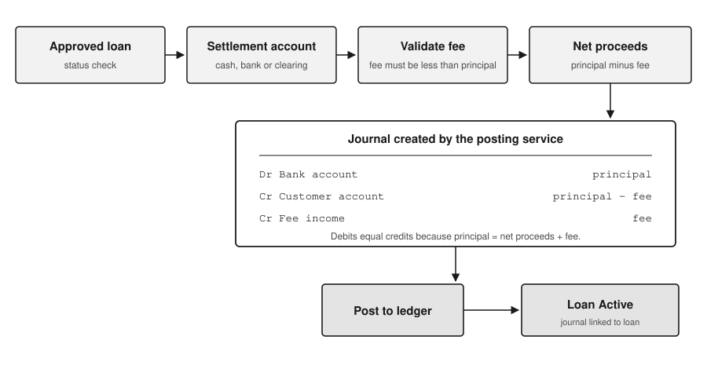
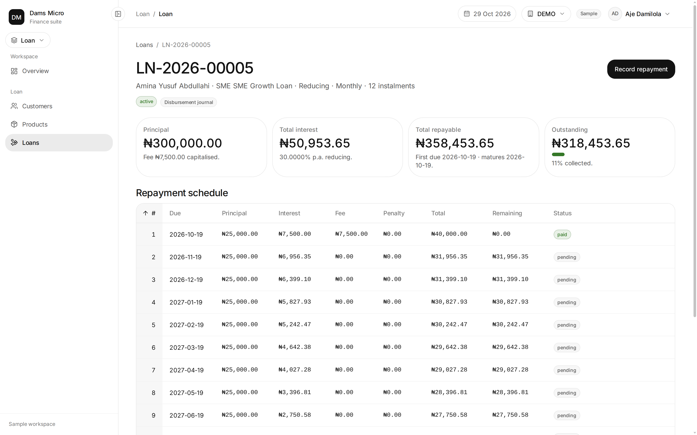
3.7 Financial reports
Reports are produced from posted records rather than from the loan module's own totals. That separation is important: if a report were calculated independently of the ledger, the two could disagree. The trial balance lists accounts with their debit and credit balances as at a selected date. Its totals should match, and a mismatch is a signal to investigate unposted or reversed journals before relying on other reports.
The balance sheet presents assets, liabilities and equity under configured headings, with the current-period surplus or deficit included so that the sheet balances. Both reports accept an as at date, which allows a user to reproduce a previous position instead of seeing only the current one.
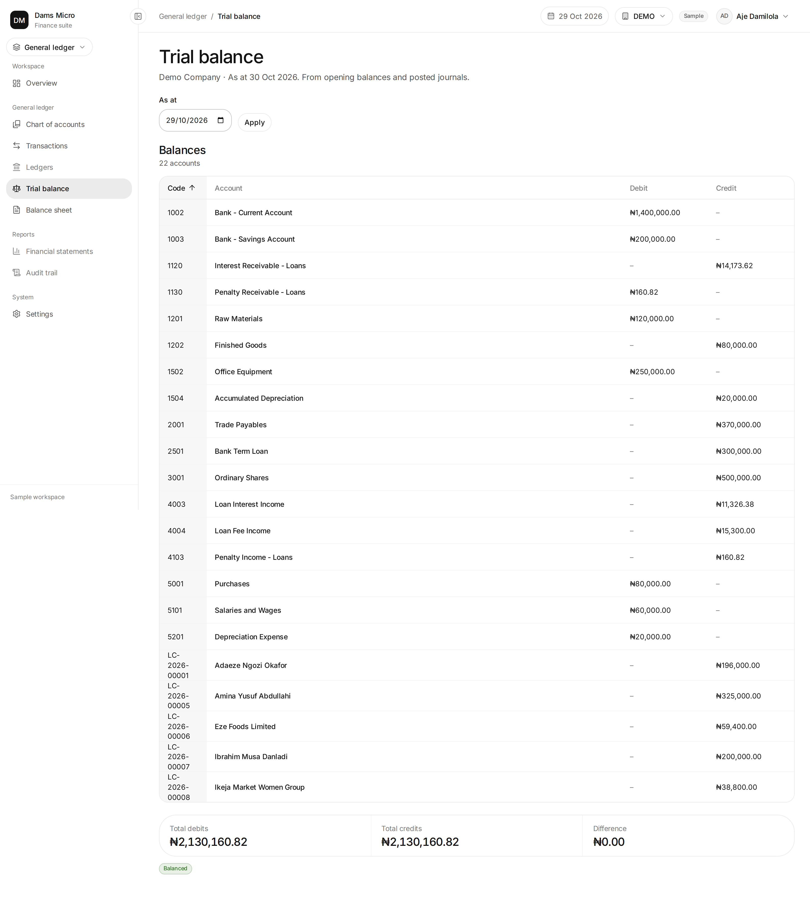
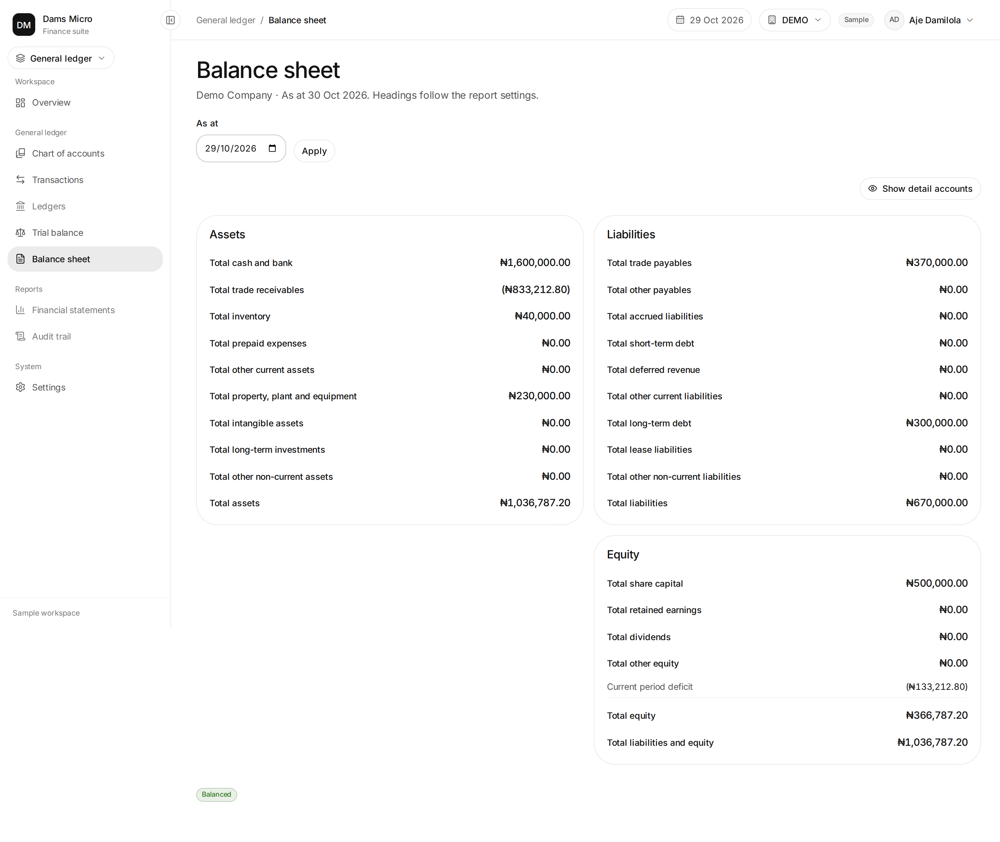
A matching trial balance is evidence that the displayed debits and credits agree; it is not proof that every underlying business event was recorded correctly. That distinction is worth stating plainly, because accounting reports can look authoritative even when the postings behind them are incomplete.
3.8 Business-date control
The business date is the financial date used by the application. It is not simply the computer's clock. Transactions are dated on or before the business date, and advancing the date is a controlled operation rather than an ordinary settings change.
Before the date moves, the system counts journals that are still in draft or submitted status and refuses to
continue while any remain. It then locks the settings row with lockForUpdate, re-checks the date
and the unposted queue inside the lock, records closing balances for the old day as the opening position for the
new day, and advances the date. The whole operation runs inside one database transaction. If any step fails, the
date does not move.
The lock and the second check matter because two users could otherwise attempt to advance the date at the same time. The first would succeed and the second could act on stale information. Re-reading the locked row closes that gap. The snapshot gives the next day a consistent opening position, and the single transaction prevents a partial close in which balances are recorded but the date is not changed.
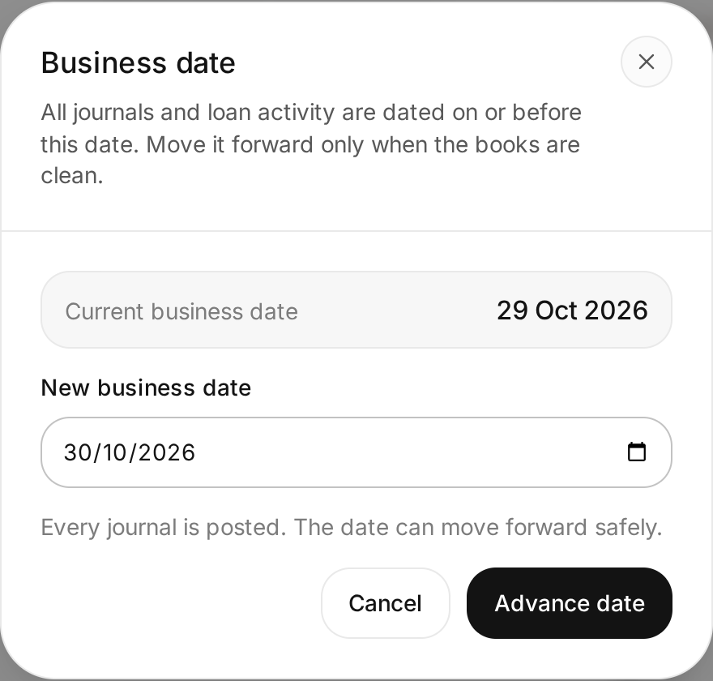
3.9 Design decisions and limitations
Several decisions run through the implementation:
- Money is handled as decimal strings. The bcmath extension is used for addition,
subtraction and comparison (
bcadd,bcsubandbccomp) so that amounts do not acquire floating-point artefacts. This trades some performance for accuracy, which is appropriate for ledger values. - Financial rules live in the backend. The interface can present a form and show an error, but the decision to accept a posting, disburse a loan or advance the date is made on the server.
- Server-generated journals are treated differently from manual journals. Loan journals are posted directly because their entries are constructed by the posting service. Their correctness depends on the service's arithmetic, which is why the fee check and the balance-by-construction pattern are important.
- Corrections are recorded, not erased. Reversals preserve the audit trail instead of editing a posted transaction.
The prototype also has limits. The product's principal-receivable mapping is informational in the current posting model, while customer accounts roll up to a customer control account. The posting directions used for loan disbursement should be reviewed against the intended accounting policy before production use. Deposits, transfers and external settlement are not implemented. Audit logging, integration with external settlement systems and broader reconciliation testing remain future work. These limits are part of an honest description of the system and point to the next stage of its development.
Chapter Four Summary, Challenges, Recommendations and Conclusion
4.1 Summary of the training
My industrial training at Golden Edge Softech placed me inside a working software team and gave me a view of financial software that a classroom exercise could not provide. I contributed to backend modules for the general ledger, fixed assets, customer management and accounts, and investments and treasury, while the core calculations remained with the senior developer. That arrangement allowed me to learn from the calculation layer without being responsible for it, and it showed me how much of a financial system consists of rules, checks and carefully handled data.
DAMS Micro turned those lessons into an independent project. Building it required me to connect accounting concepts to database design, validation and reporting, and to decide where each rule should live. The result is a prototype rather than a production system, but it demonstrates the accounting core that the placement introduced me to.
4.2 Skills acquired
Technical skills. I became more confident with Laravel application structure, controllers,
models, database transactions and PostgreSQL. I learned to use PHP's bcmath extension for monetary
arithmetic, including bcadd, bcsub and bccomp, and to accept its
performance cost in exchange for decimal accuracy. I also learned to design status-based workflows and to place
validation where every request must pass through it. I gained experience in reading an existing codebase and
working within conventions rather than starting from a blank file.
Domain knowledge. I learned the accounting equation, the meaning of debit and credit balances, account classification, chart-of-accounts hierarchy, control accounts and subledgers, prepayments, accruals and the purpose of the trial balance and balance sheet. I also learned how loan products, repayment schedules and interest accrual are represented in software.
Professional skills. Working with a senior developer and the wider team taught me to ask about requirements before writing code, to keep changes small and reviewable, and to explain technical decisions in plain language. Those habits are as important as the programming itself.
4.3 Challenges and responses
Understanding the domain before the code. Accounting terms such as accrual, prepayment, control account and normal balance were unfamiliar at first. I addressed this by reading the project's documentation, asking questions and tracing how a recorded transaction reached a report. Building DAMS Micro forced me to turn that reading into working behaviour.
Maintaining balances over time. A running balance is easy to store but harder to keep correct when transactions can have different effective dates. The prototype includes a rebuild mechanism that recalculates balances in effective-date order. This showed me that a stored balance is a convenience and must be reproducible from the underlying entries.
Organising customer detail. Putting every customer account into the main chart would make the chart unmanageable. Control accounts and a customer subledger provide a structure that keeps the main chart readable while preserving customer-level detail.
Protecting the date change. Advancing the business date touches several records. Performing the operation inside one database transaction, with a row lock and a re-check, prevents a partial close and reduces the risk of two simultaneous advances. This was a practical lesson in concurrency control rather than a theoretical one.
4.4 Recommendations
For DAMS Micro, the next steps should be audit logging, integration with external settlement, and broader reconciliation testing. Audit logging would record who posted, approved, reversed or advanced the date. Settlement integration would connect the ledger to real cash movements instead of relying on selected internal accounts. Reconciliation tests would compare loan balances, customer control totals and ledger reports over longer sequences of activity.
For students preparing for SIWES, I recommend learning the domain vocabulary before or during the placement. A developer who understands why a rule exists will implement it more carefully than one who only copies a pattern. It also helps to keep a small project of your own, because explaining a system you built exposes gaps in your understanding that reading alone does not.
4.5 Conclusion
The placement connected my academic work with professional software development and introduced me to accounting as a set of rules that software must respect. DAMS Micro is the result of applying those rules in a separate project: a general ledger that validates balanced journals, a loan module that posts its events to that ledger, reports that read from posted records, and a business date that cannot move while work is unposted.
The experience showed me that financial software is not only about displaying figures. It is about preserving the relationships between figures, making corrections visible, and refusing to accept data that would break the books. Those lessons will shape how I approach backend development in the future.
References
- Laravel. Laravel Documentation. Available at: https://laravel.com/docs (accessed during project development).
- React. React Documentation. Available at: https://react.dev/learn (accessed during project development).
- Inertia.js. Inertia.js Documentation. Available at: https://inertiajs.com/docs (accessed during project development).
- PostgreSQL Global Development Group. PostgreSQL Documentation. Available at: https://www.postgresql.org/docs/ (accessed during project development).
- The PHP Group. PHP Manual: BC Math Functions. Available at: https://www.php.net/manual/en/book.bc.php (accessed during project development).
- Aje, D. DAMS Micro User Guide and Project Source Code. Unpublished project materials, 2026.
Appendix A Selected source files
The following files contain the implementation discussed in Chapter Three. Paths are relative to the project root.
| File | Responsibility |
|---|---|
app/Http/Controllers/GeneralLedger/TransactionController.php |
Manual journal creation, status changes and the submission balance check. |
app/Models/GeneralLedger/JournalTransaction.php |
Journal model, status transitions and posting behaviour. |
app/Services/Loan/LoanPosting.php |
Creation of balanced journals for loan disbursement, accrual, penalty and repayment. |
app/Services/Loan/LoanLifecycle.php |
Loan approval, disbursement, repayment and status updates. |
app/Services/Loan/ScheduleGenerator.php |
Generation of the repayment schedule at booking. |
app/Http/Controllers/GeneralLedger/BusinessDateController.php |
Controlled advancement of the business date. |
app/Support/BusinessDate.php |
Business-date access and unposted-journal checks. |
The code excerpts in this report are reproduced for explanation. They are not a complete listing of the files and should be read together with the surrounding validation, authorisation and model logic.